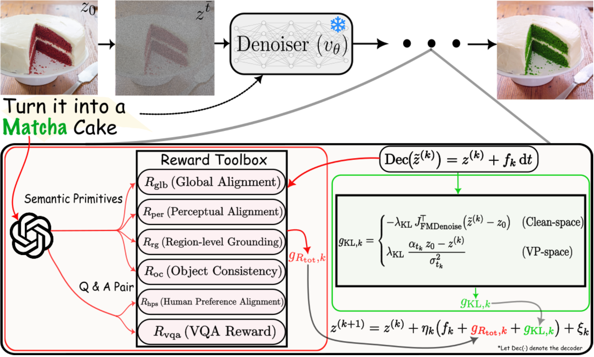

RewardFlow: Generate Images by Optimizing What You Reward
CVPR 2026
1University of Illinois Urbana-Champaign (UIUC), 2Sony

In short
RewardFlow edits and generates images with pretrained diffusion and flow-matching models at inference time, with no inversion and no retraining. It steers sampling with Langevin dynamics guided by several differentiable rewards at once: semantic alignment, perceptual fidelity, localized grounding, object consistency and human preference, plus a new VQA-based reward that gives fine-grained feedback on whether the image matches the instruction. A prompt-aware policy reads the instruction, infers what kind of edit is wanted, and adjusts each reward's weight and the step size during sampling. RewardFlow reaches state-of-the-art edit fidelity and compositional alignment on several image editing and compositional generation benchmarks.
Abstract
We introduce RewardFlow, an inversion-free framework that steers pretrained diffusion and flow-matching models at inference time through multi-reward Langevin dynamics. RewardFlow unifies complementary differentiable rewards for semantic alignment, perceptual fidelity, localized grounding, object consistency, and human preference, and further introduces a differentiable VQA-based reward that provides fine-grained semantic supervision through language-vision reasoning. To coordinate these heterogeneous objectives, we design a prompt-aware adaptive policy that extracts semantic primitives from the instruction, infers edit intent, and dynamically modulates reward weights and step sizes throughout sampling. Across several image editing and compositional generation benchmarks, RewardFlow delivers state-of-the-art edit fidelity and compositional alignment.
Citation
@inproceedings{susladkar2026rewardflow,
title={RewardFlow: Generate Images by Optimizing What You Reward},
author={Onkar Kishor Susladkar and Dong-Hwan Jang and Tushar Prakash and Adheesh Sunil Juvekar and Vedant Shah and Ayush Barik and Nabeel Bashir and Muntasir Wahed and Ritish Shrirao and Ismini Lourentzou},
booktitle={Proceedings of the IEEE/CVF Conference on Computer Vision and Pattern Recognition (CVPR)},
year={2026}
}